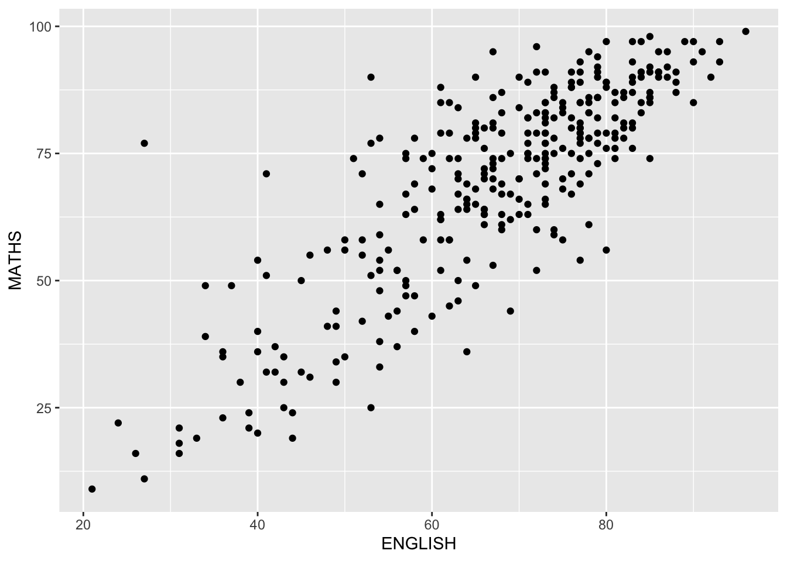
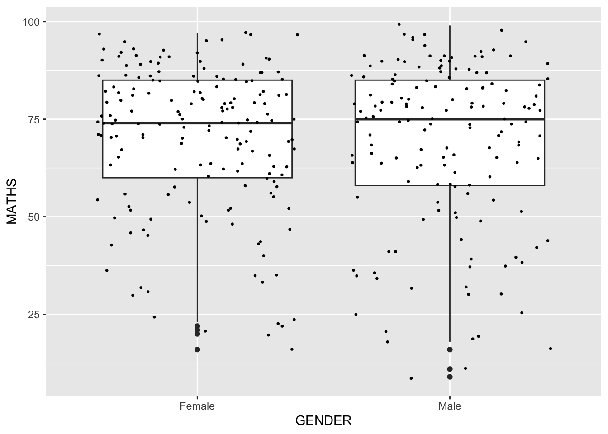
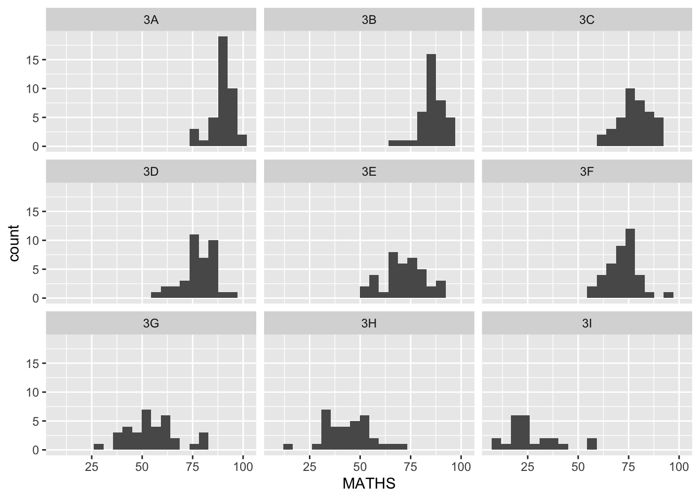

pacman::p_load(tidyverse)Hand-on Exercise 1
Getting Started
Install and launching R packages
The code chunk below uses p_load() of pacman package to check if tidyverse packages are installed in the computer. If they are, then they will be launched into R.
Importing the data
exam_data <- read_csv("data/Exam_data.csv")Rows: 322 Columns: 7
── Column specification ────────────────────────────────────────────────────────
Delimiter: ","
chr (4): ID, CLASS, GENDER, RACE
dbl (3): ENGLISH, MATHS, SCIENCE
ℹ Use `spec()` to retrieve the full column specification for this data.
ℹ Specify the column types or set `show_col_types = FALSE` to quiet this message.Plotting a simple bar chart
ggplot(data = exam_data,
aes(x = RACE)) +
geom_bar()
Introducing ggplot
R Graphics VS ggplot
hist(exam_data$MATHS)
ggplot(data=exam_data, aes(x = MATHS)) +
geom_histogram(bins=10,
boundary = 100,
color="yellow",
fill="red") +
ggtitle("Distribution of Maths scores")
Essential Grammatical Elements in ggplot2: data
ggplot(data=exam_data)Essential Grammatical Elements in ggplot2: Aesthetic mappings
ggplot(data=exam_data,
aes(x= MATHS))
Essential Grammatical Elements in ggplot2: geom
Geometric Objects: geom_bar
ggplot(data=exam_data,
aes(x=RACE)) +
geom_bar()
Geometric Objects: geom_dotplot
ggplot(data=exam_data,
aes(x = MATHS)) +
geom_dotplot(dotsize = 0.5)Bin width defaults to 1/30 of the range of the data. Pick better value with
`binwidth`.
ggplot(data=exam_data,
aes(x = MATHS)) +
geom_dotplot(binwidth=2.5,
dotsize = 0.5) +
scale_y_continuous(NULL,
breaks = NULL) 
Geometric Objects: geom_histogram()
ggplot(data=exam_data,
aes(x = MATHS)) +
geom_histogram() `stat_bin()` using `bins = 30`. Pick better value with `binwidth`.
Modifying a geometric object by changing geom()
ggplot(data=exam_data,
aes(x= MATHS)) +
geom_histogram(bins=20,
color="black",
fill="light blue") 
Modifying a geometric object by changing aes()
ggplot(data=exam_data,
aes(x= MATHS,
fill = GENDER)) +
geom_histogram(bins=20,
color="grey30")
Geometric Objects: geom-density()
ggplot(data=exam_data,
aes(x = MATHS)) +
geom_density(color="cyan") 
ggplot(data=exam_data,
aes(x=MATHS,
color = GENDER)) +
geom_density()Color scheme improvement–geom-density()
ggplot(data = exam_data,
aes(x = MATHS,
fill = GENDER,
color = GENDER)) +
geom_density(size = 2,
alpha = 0.6) +
scale_color_manual(values = c("Female" = "#1F77B4", "Male" = "#2CA02C")) +
scale_fill_manual(values = c("Female" = "#1F77B4", "Male" = "#2CA02C")) +
labs(x = "Maths Score",
y = "Density",
title = "Density of Maths Score by Gender") +
theme(
plot.background = element_rect(fill = "#f5f5f5", colour = "#f5f5f5"),
plot.title = element_text(size = 16, face = "bold", hjust = 0.5)
)Warning: Using `size` aesthetic for lines was deprecated in ggplot2 3.4.0.
ℹ Please use `linewidth` instead.
Geometric Objects: geom_boxplot
ggplot(data = exam_data,
aes(y = MATHS,
x = GENDER)) +
geom_boxplot()ggplot(data=exam_data,
aes(y=MATHS,
x=GENDER))+
geom_boxplot(notch = TRUE)
Geometric Objects: geom_violin
ggplot(data=exam_data,
aes(y = MATHS,
x= GENDER)) +
geom_violin()
Geometric Objects: geom_point()
ggplot(data=exam_data,
aes(y=MATHS,
x=ENGLISH))+
geom_point()
geom objects can be combined
ggplot(data=exam_data,
aes(y=MATHS,
x=GENDER)) +
geom_boxplot() +
geom_point(position = "jitter",
size=0.5)
Essential Grammatical Elements in ggplot2: stat
Working with stat()
ggplot(data=exam_data,
aes(y=MATHS,x=GENDER)) +
geom_boxplot()
Working with stat - the stat_summary() method
ggplot(data=exam_data,
aes(y=MATHS,
x=GENDER))+
geom_boxplot() +
stat_summary(geom = "point",
fun = "mean",
colour="red",
size=4)
Working with stat - the geom() method
ggplot(data=exam_data,
aes(y=MATHS,
x=GENDER)) +
geom_boxplot() +
geom_point(stat="summary",
fun="mean",
colour="skyblue1",
size=4)
Adding a best fit curve on a scatterplot
ggplot(data=exam_data,
aes(y=MATHS,
x=ENGLISH))+
geom_point() +
geom_smooth(size=0.5)`geom_smooth()` using method = 'loess' and formula = 'y ~ x'ggplot(data=exam_data,
aes(y=MATHS,
x=ENGLISH)) +
geom_point()+
geom_smooth(method = lm,
size=0.5)`geom_smooth()` using formula = 'y ~ x'Essential Grammatical Elements in ggplot2: Facets
Working with facet_wrap()
ggplot(data=exam_data,
aes(x=MATHS)) +
geom_histogram(bins = 20) +
facet_wrap(~ CLASS)facet_grid() function
ggplot(data = exam_data,
aes(x=MATHS)) +
geom_histogram(bins = 20) +
facet_grid(~ CLASS)
Essential Grammatical Elements in ggplot2: Coordinates
Working with Coordinate
ggplot(data= exam_data,
aes(x=RACE)) +
geom_bar()
ggplot(data = exam_data,
aes(x=RACE)) +
geom_bar() +
coord_flip()
Changing the y- and x-axis range
ggplot(data=exam_data,
aes(x=MATHS,y=ENGLISH)) +
geom_point()+
geom_smooth(method = lm, size=0.5)`geom_smooth()` using formula = 'y ~ x'
ggplot(data=exam_data,
aes(x= MATHS, y=ENGLISH)) +
geom_point() +
geom_smooth(method=lm,
size=0.5) +
coord_cartesian(xlim=c(0,100),
ylim=c(0,100))`geom_smooth()` using formula = 'y ~ x'
Essential Grammatical Elements in ggplot2: themes
Working with theme
ggplot(data=exam_data,
aes(x=RACE)) +
geom_bar() +
coord_flip() +
theme_gray()
ggplot(data=exam_data,
aes(x=RACE)) +
geom_bar() +
coord_flip() +
theme_classic()
ggplot(data=exam_data,
aes(x=RACE)) +
geom_bar() +
coord_flip() +
theme_minimal()
Exploration
- When plotting faceted histograms, an additional dimension is introduced for comparative analysis.
ggplot(exam_data, aes(x = MATHS)) +
geom_histogram(bins = 20) +
facet_grid(GENDER ~ CLASS)
- Color Names Reference Chart
- Interactive Scatter Plot
pacman::p_load(plotly)
p <- ggplot(data=exam_data, aes(x = ENGLISH, y = MATHS, color = GENDER)) +
geom_point()
ggplotly(p)- Interactive histogram chart
p <- ggplot(exam_data, aes(x = ENGLISH)) +
geom_histogram(binwidth=10, color= "cyan4")
ggplotly(p)- Add data labels in the histograms chart
ggplot(data = exam_data, aes(x = MATHS)) +
geom_histogram(bins = 20, color = "cyan2", fill = "light blue") +
stat_bin(bins = 20,
geom = "text",
aes(label = after_stat(count)),
vjust = -0.2,
color = "tan1",
size = 4)